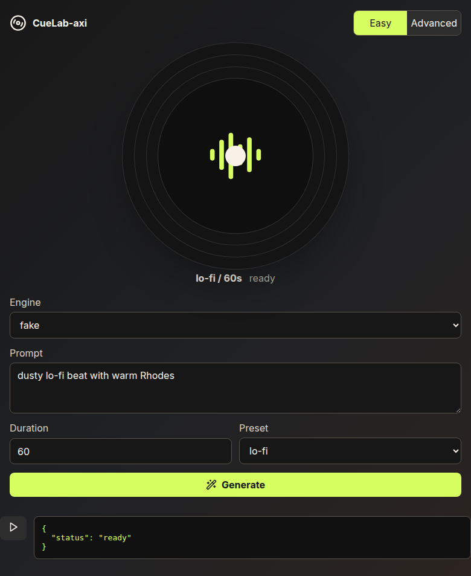
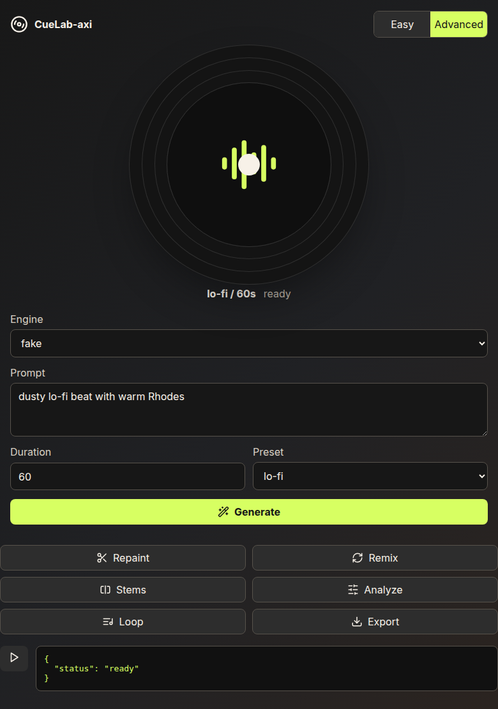

Plumbing (done)
beatforge-axi --engine synth generate \
--prompt "soft focus drone" \
--duration 15 \
--out /tmp/auraflow-bf-synth.mp3Returns status: ok and a real MP3. Requires ffmpeg on PATH.
BeatForge is a music sibling to lavish-axi — same AXI conventions (TOON stdout, local-first, structured errors), but for audio instead of HTML review. This artifact shows what shipped for AuraFlow orchestrators and what CueLab looks like today.
Orchestrators shell out to beatforge-axi. Success is TOON status: ok plus a playable MP3 on disk. Missing weights or FFmpeg fail closed — no silent fallback to proprietary services or NC weights.
beatforge-axi --engine synth generate \
--prompt "soft focus drone" \
--duration 15 \
--out /tmp/auraflow-bf-synth.mp3Returns status: ok and a real MP3. Requires ffmpeg on PATH.
export BEATFORGE_ACESTEP_PROJECT_ROOT=~/src/ACE-Step-1.5
beatforge-axi --engine acestep generate \
--prompt "dusty lo-fi beat with warm Rhodes" \
--duration 60 \
--out /tmp/auraflow-bf-daily.mp3MIT turbo bundle + pinned checkout required. See docs/setup-mac-daily.md.
CueLab is BeatForge’s Lavish-analogue human surface: waveform platter, generate controls, and (eventually) accept/reject on returned artifacts. Screenshots below are from the live React/Vite app running locally — not mocks.


/v1/jobs/generatelavish-axi reviews HTML artifacts with annotate + queue feedback. CueLab will review audio artifacts with waveform selection and human sign-off — same AXI loop, different medium.
Engine names are stable CLI flags. Synth unblocks orchestrators immediately; acestep is the generative product path once weights are verified on the daily Mac.
| Engine | CLI flag | MP3 | Weights | Status |
|---|---|---|---|---|
| Synth | --engine synth | FFmpeg encode | None | Ready |
| ACE-Step 1.5 | --engine acestep | Native MP3 | MIT turbo @ pinned revision | Env + checkpoint |
| Fake | --engine fake | Placeholder bytes | None | CI / UI dev only |
| MusicGen | --engine musicgen | — | Meta NC rejected | Gated |
Phase 0 architecture (linked artifact) defines the full modular monolith. This PR closes the AuraFlow generate contract; the acceptance board lives in CueLab follow-on work.
phase-0-architecture.html in Lavish for the original review surface.Queue your choice back to the agent through Lavish. This steers the next implementation slice after you’ve seen the UI and plans.